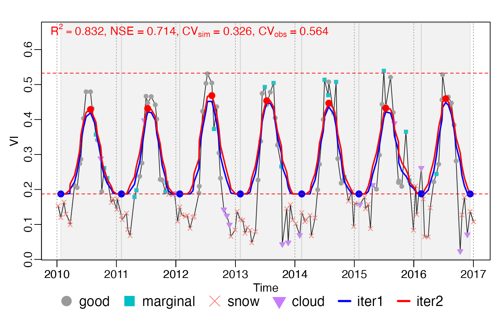

Moving growing season division
season_mov(INPUT, options = list(), ..., years.run = NULL)A list object with the elements of t, y, w,
Tn (optional) and ylu, returned by check_input().
see the following section options for season for details.
others parameter to set_options()
Numeric vector. Which years to run? If not specified, it is all years.
rFUN : character (default smooth_wWHIT), the name of rough
curve fitting function, can be one of c("smooth_wSG", "smooth_wWHIT", "smooth_wHANTS"), which are corresponding to smooth_wSG(),
smooth_wWHIT() and smooth_wHANTS().
wFUN : character (default wTSM), the name of weights
updating functions, can be one of c("wTSM", "wChen", "wBisquare",
"wSELF"). See wTSM(), wChen(), wBisquare() and wSELF() for
details.
iters : integer (default 2), the number of rough fitting
iterations.
wmin : double, the minimum weight of bad points (i.e. snow,
ice and cloud).
verbose : logical (default FALSE). If TRUE,
options$season will be printed on the console.
lambda : double (default NULL), the smoothing parameter of
smooth_wWHIT().
If lambda = NULL, V-curve theory will be employed to find the
optimal lambda. See lambda_vcurve() for details.
frame : integer (default NULL), the parameter of
smooth_wSG(), moving window size.
If frame = NULL, frame will be reset as floor(nptperyear/5)*2 + 1 (refered by TIMESAT).
nf : integer (default 4), the number of frequencies in
smooth_wHANTS().
maxExtendMonth: integer (default 12), previous and subsequent
maxExtendMonth (in month) data were added to the current year for rough
fitting.
nextend : integer (default NULL), same as maxExtendMonth, but
in points.
If nextend provided, maxExtendMonth will be ignored.
If nextend = NULL, nextend will be reset as
ceiling(maxExtendMonth/12*nptperyear)
minpeakdistance : double (default NULL), the minimum distance of two
peaks (in points). If the distance of two maximum extreme value less than
minpeakdistance, only the maximum one will be kept.
If minpeakdistance = NULL, it will be reset as nptperyear/6.
r_max : double (default 0.2; in (0, 1)). r_max and r_min
are used to eliminate fake peaks and troughs.
The real peaks should satisfy:
\(max(h_{peak, L}, h_{peak, R}) > r_{max} A\)
\(min(h_{peak, L}, h_{peak, R}) > r_{min} A,\) where \(h_{peak, L}, h_{peak, R}\) are height difference from the peak to the left- and right-hand troughs.
The troughs should satisfy:
\(max(h_{trough, L}, h_{trough, R}) > r_{max} A,\) where \(h_{trough, L}, h_{trough, R}\) are height difference from the trough to the left- and right-hand peaks.
r_min : double (default 0.05; in (0, 1)), see above r_max
for details. r_min < r_max.
rtrough_max : double (default 0.6, in (0, 1)), \(y_{peak} <=
rtrough_max * A + ylu[1]\).
ypeak_min : double 0.1 (in VI unit), \(y_{peak} >= ypeak_min\).
.check_season : logical (default TRUE). check the growing season
length according to len_min and len_max. If FALSE, len_min and
len_max will lose their effect.
len_min : integer (default 45), the minimum length (in days) of
growing season
len_max : integer (default 650), the minimum length (in days)
of growing season
adj.param : logical. If TRUE (default), if there are too many
or too less peaks and troughs, phenofit will automatically adjust rough
curve fitting function parameters. See MaxPeaksPerYear and
MaxTroughsPerYear for details.
MaxPeaksPerYear (optional) : integer (default 2), the max number of
peaks per year. If PeaksPerYear > MaxPeaksPerYear, then lambda = lambda*2.
MaxTroughsPerYear (optional) : integer (default 3), the max number of
troughs per year. If TroughsPerYear > MaxTroughsPerYear, then lambda = lambda*2.
calendarYear : logical (default FALSE). If TRUE, the start and
end of a calendar year will be regarded as growing season division (North
Hemisphere is from 01 Jan to 31 Dec; South Hemisphere is from 01 Jul to 30
Jun).
rm.closed : logical (default TRUE). If TRUE, closed peaks (or troughs)
will be further tidied. Only the maximum
is.continuous (not used): logical (default TRUE). This parameter is for
fluxnet2015 fluxsite data, where the input might be not continuous.
Kong, D., Zhang, Y., Wang, D., Chen, J., & Gu, X. (2020). Photoperiod Explains the Asynchronization Between Vegetation Carbon Phenology and Vegetation Greenness Phenology. Journal of Geophysical Research: Biogeosciences, 125(8), e2020JG005636. https://doi.org/10.1029/2020JG005636
Kong, D., Zhang, Y., Gu, X., & Wang, D. (2019). A robust method for reconstructing global MODIS EVI time series on the Google Earth Engine. ISPRS Journal of Photogrammetry and Remote Sensing, 155, 13-24.
data("CA_NS6")
d <- CA_NS6
nptperyear <- 23
INPUT <- check_input(d$t, d$y, d$w,
QC_flag = d$QC_flag,
nptperyear = nptperyear, south = FALSE,
maxgap = nptperyear / 4, alpha = 0.02, wmin = 0.2
)
# curve fitting by year
brks_mov <- season_mov(INPUT,
options = list(
rFUN = "smooth_wWHIT", wFUN = "wTSM",
lambda = 10,
r_min = 0.05, ypeak_min = 0.05,
verbose = TRUE
)
)
#> [season_mov] running 1 ...
#> iloop = 1: lambda = 10.0, ntrough_PerYear = 0.00, npeak_PerYear = 0.00
#> iloop = 2: lambda = 5.0, ntrough_PerYear = 0.00, npeak_PerYear = 0.00
#> iloop = 3: lambda = 2.5, ntrough_PerYear = 0.00, npeak_PerYear = 0.00
#> [season_mov] running 2 ...
#> iloop = 1: lambda = 10.0, ntrough_PerYear = 0.00, npeak_PerYear = 0.00
#> iloop = 2: lambda = 5.0, ntrough_PerYear = 0.00, npeak_PerYear = 0.00
#> iloop = 3: lambda = 2.5, ntrough_PerYear = 0.00, npeak_PerYear = 0.00
#> [season_mov] running 3 ...
#> iloop = 1: lambda = 10.0, ntrough_PerYear = 0.00, npeak_PerYear = 0.00
#> iloop = 2: lambda = 5.0, ntrough_PerYear = 0.00, npeak_PerYear = 0.00
#> iloop = 3: lambda = 2.5, ntrough_PerYear = 0.00, npeak_PerYear = 0.00
#> [season_mov] running 4 ...
#> iloop = 1: lambda = 10.0, ntrough_PerYear = 0.00, npeak_PerYear = 0.00
#> iloop = 2: lambda = 5.0, ntrough_PerYear = 0.00, npeak_PerYear = 0.00
#> iloop = 3: lambda = 2.5, ntrough_PerYear = 0.00, npeak_PerYear = 0.00
#> [season_mov] running 5 ...
#> iloop = 1: lambda = 10.0, ntrough_PerYear = 0.00, npeak_PerYear = 0.00
#> iloop = 2: lambda = 5.0, ntrough_PerYear = 0.00, npeak_PerYear = 0.00
#> iloop = 3: lambda = 2.5, ntrough_PerYear = 0.00, npeak_PerYear = 0.00
#> [season_mov] running 6 ...
#> iloop = 1: lambda = 10.0, ntrough_PerYear = 0.00, npeak_PerYear = 0.00
#> iloop = 2: lambda = 5.0, ntrough_PerYear = 0.00, npeak_PerYear = 0.00
#> iloop = 3: lambda = 2.5, ntrough_PerYear = 0.00, npeak_PerYear = 0.00
#> [season_mov] running 7 ...
#> iloop = 1: lambda = 10.0, ntrough_PerYear = 0.00, npeak_PerYear = 0.00
#> iloop = 2: lambda = 5.0, ntrough_PerYear = 0.00, npeak_PerYear = 0.00
#> iloop = 3: lambda = 2.5, ntrough_PerYear = 0.00, npeak_PerYear = 0.00
plot_season(INPUT, brks_mov)

rfit <- brks2rfit(brks_mov)
# Phenological Metrics from rough fitting
r <- get_pheno(rfit)